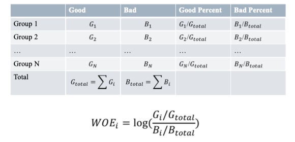
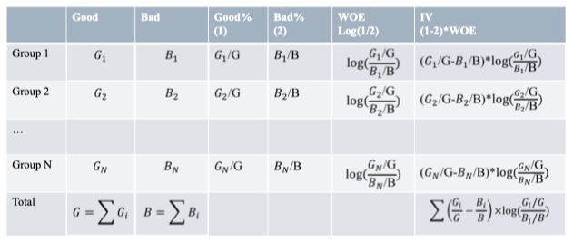

简述建模过程
- 数据预处理
- 时间格式
- 缺失值
- 极值
- 特征构造
- 计数
- 比例
- 距离
- 特征选择
- 相关性
- 差异性
- 显著性
模型参数估计
- 回归系数
- 模型复杂度
常用数据格式的处理方式
一般而言原始数据带有一定的格式,需要转换成正确的格式.
例如:
- 利率
带%的百分比,需要转化成浮点数 - 日期
Nov-17,需要转化为Python的时间 - 工作年限
"<1 year"转化为0,">10years"转化为11 - ...
文本类的数据的处理方式
- 主题提取
优点: 提取准确,详细的信息,对风险的评估非常有效
缺点: NPL的模型较为复杂,且需要足够多的训练样本 - 编码
优点: 简单
缺点: 信息丢失很高
缺失值的处理方式
缺失在数据分析的工作是频繁出现的
- 缺失的种类
- 完全随机缺失
- 随机缺失
- 完全非随机缺失
- 处理的方法
- 补缺
- 作为一种状态
常用的特征衍生方式
- 计数: 过去1年内申请贷款的总次数
- 求和: 过去1年内的网店消费总额
- 比例: 贷款申请额度与年收入的占比
- 时间差: 第一次开户距今时长
- 波动率: 过去3年内每份工作的时间的标准差
特征的分箱
对特征做分箱操作
分箱的一些描述
- 分箱的定义
- 将连续变量离散化
- 将多状态的离散变量合并成少状态
- 分箱的重要性
- 稳定性: 避免特征中无意义的波动对评分带来的波动
- 健壮性: 避免了极端值的影响
- 分箱的优势
- 可以将缺失作为独立的一个箱带入模型中
- 将所有变量变换到相似的尺度上
- 分箱的限制
- 计算量大
- 分箱后需要编码
常用的分箱方法
- 有监督
- Best-KS
- ChiMerge
- 无监督
- 等频
- 等距
- 聚类
Best-KS
原理: 让分箱后组别的分布的差异最大化
对于连续变量
- 排序, \(x=\lbrace X_1,X_2,...,X_k\rbrace \)
- 计算每一点的KS值
- 选择最大的KS对应的特征值
卡方分箱法
注意
对于连续型变量
- 使用ChiMerge进行分箱,默认分为5个箱.
- 检查分箱后的bad rate单调性;倘若不满足,需要进行相邻两箱的合并,直到bad rate为止.
WOE编码
WOE(weight of evidence,证据权重)
一种有监督的编码方式,将预测类别的集中度的属性作为编码的数值
优势
- 将特征的值规范到相近的尺度上(经验上讲,WOE的绝对值波动范围在0.1~3之间)
- 具有业务含义
缺点
- 需要每箱中同时包含好,坏两个类别
WOE计算公式

WOE编码的意义
- 符号和好样本比例相关
- 要求回归模型的系数为负
特征信息度的计算和意义
可以用信息度来进行变量挑选
在评分卡模型中,变量挑选是非常重要的工作.比如:
如果变量之间具有共线性,线性相关性,那么就会造成信息冗余,这就降低了显著性,甚至造成符号失真.
变量太多的话,也加剧了后期验证,部署,监控的负担.而且有些变量在业务上含义不充分,解释性比较低.
这里是进行变量挑选的一些依据
- 带约束Lasso
- 特征重要性:随机森林
- 模型拟合优度和复杂度:基于AIC的逐步回归
- 变量信息度:IV
IV(Information Value),衡量特征包含预测变量浓度的一种指标

特征信息度的结构
\[IV_i=(G_i-B_i)\times \log{\dfrac{G_i}{B_i}} = (G_i-B_i)\times WOE_i\]
其中,G_i,B_i代表箱i中好坏样本占全体好坏样本的比例.
WOE:衡量两类样本分布的差异性
(G_i,B_i):衡量差异的重要性
例如:
G_1=0.2,B_1=0.1与G_2=0.02,B_2=0.01
\[WOE_1=WOE_2=log(2) \\\
IV_1=(0.2-0.1)\times log(2)=0.1 \times log(2) \\\
IV_2=(0.02-0.01) \times log(2)=0.01 \times log(2)\]
特征信息度的作用
挑选变量
- 非负指标
- 高IV表示该特征和目标变量的关联度高
- 目标变量只能是二分类
- 过高的IV,可能有潜在的风险
- 特征分箱越细,IV越高
- 常用的阈值
- <=0.02 : 没有预测性,不可用
- 0.02 ~ 0.1 : 弱预测性
- 0.1 ~ 0.2 : 有一定的预测性
- 0.2+ : 高预测性
信用风险中的单变量分析和多变量分析
单变量分析
目的:根据变量某些属性,从初选名单(long list)中筛选出合适的变量进入缩减名单(short list)
那么需要分析变量属性
- 变量的显著性(高IV)
- 变量的分布
- 变量的业务含义
以分箱后的WOE为例
- 用IV检验有效性
- 连续变量bad rate的单调性(可以放宽到U型)
- 单一区间的占比不宜过高
多变量分析
变量的两两相关性
当相关性高时,只能保留一个.